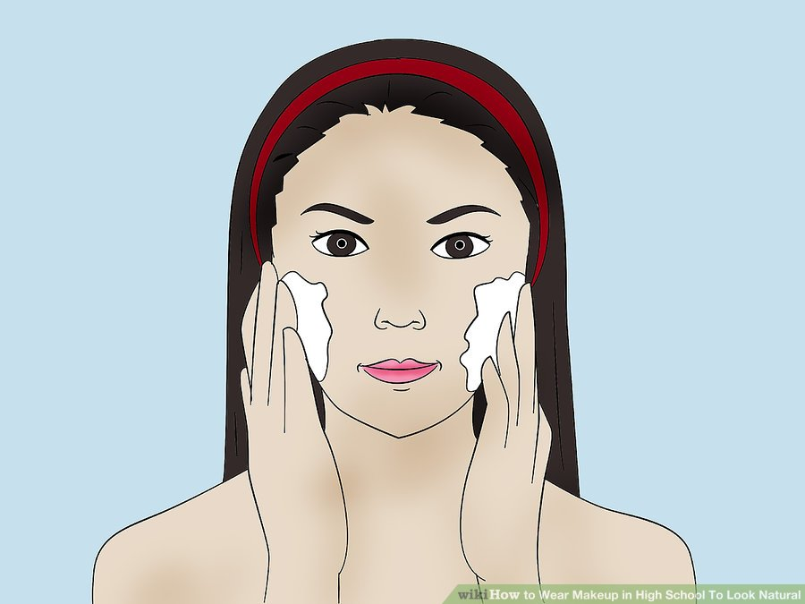

Have you seen the girls in high school who seem to have the perfect makeup? Well you can be one of those girls without looking like a paint canvas. Even if you don't have the perfect skin. Step 1 Step 2 Step 3 Step 4 Step 5 Step 6 Step 7 Step 8 Step 9 Step 10
Steps

1. Wash your face twice each day, once in the morning and again at night.
You don't want that crusty skin on your face. After washing your face, apply a light moisturizer so your skin will be soft and your makeup will apply evenly.